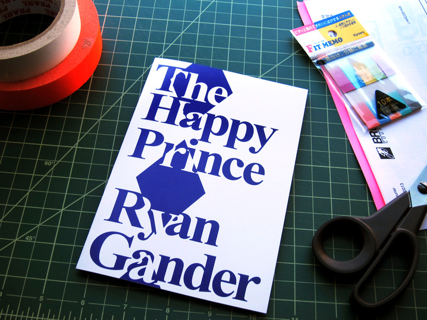
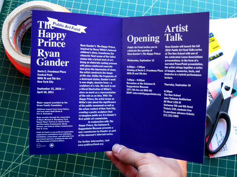
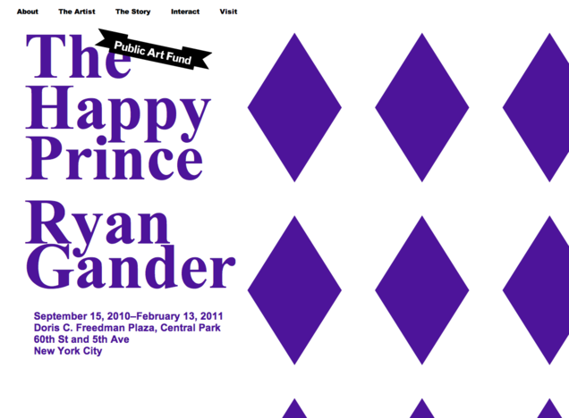
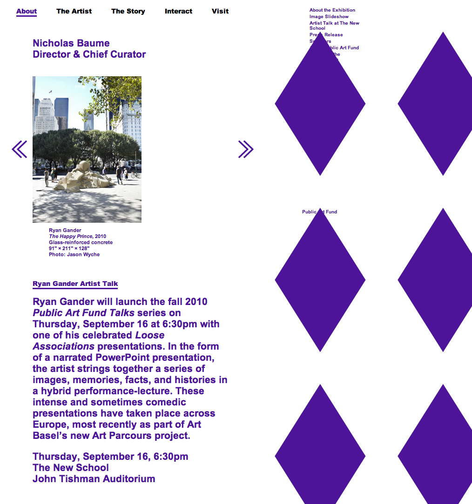

Linked By Air




Happy Prince
Medium: Print, Exhibition, Website
Client: Public Art Fund
Year: 2010
The Happy Prince, a public sculpture by Ryan Gander, was our second project with Public Art Fund, and included a website (with lots of great material), invitation, sign, street banners, and magazine advertising. The identity and website work as a kind of disjointed fairy tale.
The website acts as a curtain or machine. As you scroll down to read a text such as Oscar Wilde’s story of the Happy Prince, on which the sculpture is based, the diamond pattern moves aside. Other interactive features are available, including audio of the story being read, a virtual tour of the exhibition, and an audio interview with Gander.